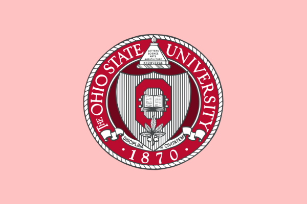

押川研究室のウェブページへようこそ
私達の研究室では、理論物理学（物性理論・統計力学）を研究しています。
News
- 押川正毅 「遍歴物理学者のこれまでとこれから」（物性研談話会）
録画 (日本語講演、スライドは英語）
スライド（英語） -

Professor Masaki Oshikawa Joins Ohio State as Ohio Eminent Scholar （オハイオ州立大学物理学科ニュース記事、英文） -

仁科財団の報道発表資料
仁科記念賞の受賞にあたって （押川のコメント）
押川正毅教授が仁科記念賞を受賞 （物性研ニュース）
【受賞】理学部物理学科 田﨑 晴明 教授 （学習院大学ニュース）
仁科記念賞に本間希樹氏ら （日本経済新聞 2025.11.4オンライン記事・2025.11.5朝刊）
仁科賞に本間氏ら3氏 ブラックホール撮影、量子研究 （時事通信・Yahoo!ニュース 2025.11.4配信）
仁科記念賞に本間氏ら3氏 ブラックホール撮影、量子スピン系研究 （朝日新聞 2025.11.10オンライン記事・2025.11.11朝刊）
田崎晴明氏、押川正毅氏が第71回仁科記念賞を受賞 (京都大学基礎物理学研究所 2025.11.11) - 押川正毅教授のインタビュー動画 「科学者達はどう学ぶか」が公開されています。それぞれをクリックしてYouTube上でご覧頂けます。
- 中柴柊馬（東京大学理学部物理学科卒業）さんと中村麻人さん（筑波大学工学システム学類卒業）が修士課程学生として加入しました。(2025.4)
- 清水陽喜さんと福嶋拓海さんが修士課程を修了しました。博士課程に進学し、引き続き当研究室で研究します。(2025.3)
- Ching-Yu Yaoさん(国立台湾大学卒業・Cambridge大学MASt修了）が修士課程学生として加入しました。稲村寛生さんがOxford大学Leverhulme-Peierls Fellowとして転出されました。(2024.10)
- 上田篤さんがベルギーのGhent大学博士研究員として転出されました。稲村さんはOxford大学着任までの半年間、当研究室に特任研究員として引き続き在籍します。(2024.4)
- 稲村寛生さん、上田篤さんが博士課程を修了しました。博士課程での優れた研究が評価され、お二人とも理学系研究科奨励賞を受賞しました。 (2024.3)
- Han YANさんが助教として着任しました。 (2023.10)
- Myles SCOLLONさんが修士課程を修了しました。博士課程に進学し、引き続き当研究室で研究します。(2023.9)
- Li Linhaoさんが博士課程を修了しました。修了後はベルギーのGhent大学で博士研究員として研究を進めます。(2023.9)
- Yunqin ZHENGさんがC. N. Yang Institute for Theoretical Physics, Stony Brook Universityの博士研究員として転出されました。(2023.8)
- 講演記録 のページを追加しました。過去の講演の動画などをまとめています。 (2023.5)
- 論文紹介（＋研究のいきさつなど）のページを追加しました。(2023/4)
- 研究内容 のページを少しアップデートしました (2023/4)
- 清水陽喜さん（東京大学理学部物理学科卒業）と福嶋拓海さん（岡山大学理学部物理学科卒業）が修士課程に入学しました。(2023/4)
- 日高裕一朗さんが博士課程を修了しました。(2023/3)
- Yifan Liuさん（中国 南開大学卒業）が修士課程に入学しました (2022/10)
- Chenhua GENGさんが、博士課程を修了しました (2022/6)
- 助教の公募は終了しました(2023年10月着任予定)。 (2022/6)
- 押川正毅教授が、令和４年度文部科学大臣表彰の科学技術賞（研究部門）を受賞しました。(2022/4)
- 山田尚輝さんが、修士課程を修了しました。(2022/3)
- A. Ueda and M. Oshikawa, Resolving the Berezinskii-Kosterlitz-Thouless transition in the 2D XY model with tensor-network-based level spectroscopyが PRB Editor Suggestion として出版 されました。(2021/10)
- カナダ Simon Fraser Universityを卒業した Myles Scollonさんが修士課程に入学しました。(2021/10)
- 小林良平さんが、博士課程を早期修了し、University of Maryland博士研究員に着任しました。(2021/9)
- 助教として活躍した多田靖啓さんが、広島大学准教授に栄転しました。(2021/4)
- 研究室で修士課程〜博士課程を修了したYuan Yaoさんが、基礎科学特別研究員として理化学研究所に着任しました。(2021/4)
- 助教の多田靖啓さんが日本物理学会若手奨励賞（領域６）を受賞しました。受賞題目「カイラル超流動体におけるエッジカレントと軌道角運動量の理論的研究」(2021/3)
- Kavli IPMUとのジョイント博士研究員だった Chang-Tse Hsiehさん（現・理研）が日本物理学会若手奨励賞（素粒子論領域）を受賞しました。受賞題目「マックスウェル理論における電磁双対性の量子異常」(2021/3)
- カナダ・ブリティッシュコロンビア大学(UBC)と当研究室のジョイント研究員として Sayak DasguptaさんがUBCに着任しました。(2020/12)
- Yunqin Zhengさん（Princeton大学より）が博士研究員（Kavli IPMU兼任）として着任しました。(2020/11)
- Yuan Yaoさんが博士課程を修了しました。 (2020/09)
- 山田尚輝さん（早稲田大学より）が修士課程１年生として加入しました。(2020/04)
- 山田昌彦さんが博士課程を修了しました。 (2020/03)
- 過去のニュース (2012-2019) はこちら。過去のニュース (2012年まで) はこちら。
過去に押川研究室が運営に参加した研究会・会議等
| 2019/2/18 - 2019/2/20 | Topological Phases and Functionality of Correlated Electron Systems 2019 |
| 2018/4/9 - 2018/4/10 | Novel Phenomena in Quantum Materials driven by Multipoles and Topology |
| 2017/2/6 - 2017/3/3 | International Workshop on Theory of Correlated Topological Materials |
| 2016/6/27 - 2016/7/15 | International Workshop on Tensor Networks and Quantum Many-Body Problems |
| 2016/2/29 - 2016/3/4 | Topological Phenomena in Novel Quantum Matter: Laboratory Realization of Relativistic Fermions and Spin Liquids |
| 2015/5/25 - 2015/5/29 | International Workshop on Condensed Matter Physics & AdS/CFT |
| 2015/3/26 | Topological aspects in correlated electron systems |
| 2014/4/17 - 2014/4/19 | スーパーマターが拓く新量子現象 |
| 2013/6/3 - 2013/6/21 | Emergent Quantum Phases in Condensed Matter |
| 2010/2/8 - 2010/2/12 | Condensed Matter Physics Meets High Energy Physics |
| 2008/6/2 - 2008/6/27 | Topological Aspects of Solid State Physics |